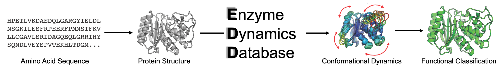

DynamicsDB: Enzyme Dynamics Database
First large-scale database of protein dynamics, linking dynamics to function for enzymes.
- Provides dynamics signatures of enzyme families based on functional classes
- Clustering of enzymes by structure, dynamics, conservation
- DFI-based analysis for detailed flexibility profiling
- Tools for visualizing and comparing protein dynamics
Visit DynamicsDB
